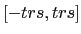

Prior to 2D alignment and clustering, we begin by minimising the effect that off-centre particles could have on the subsequent steps. The method is not aimed at determining the rotational origin shifts exactly but only to roughly centre the particles in the box. This is done by bringing all particle images into broad register with respect to their 2D shifts only, regardless of their in-plane rotation. simple_stackops with the argument shalgn=yes is used, providing our stack (stk=particles.spi), sampling distance (smpd=1.62) and mask radius in pixels (msk=60 as input
$ simple_stackops stk=particles.spi smpd=1.62 msk=60
shalgn=yes trs=3.5 lp=20 nthr=8 outstk=particles_sh.spi
The shift alignment is done with a hard low-pass limit of 20 Å (lp=20), as are most of the following steps. The iterative process will typically take a dozen iterations (a few minutes). The trs argument limits the shift search to the

range. We typically set the trs argument to 2.5% of the image dimension (140). There are 8 CPUs on our machine so we set the number of threads nthr=8. A new centred stack (named according to the outstk argument) will be written to disk and we will use this one for the reminder of the workflow. A document named shiftdoc.txt by default that contains the calculated shifts is also created.
Next we generate random class averages to initiate the 2D clustering procedure. Given the modest size of our dataset (10,000 images) we choose ncls=200 to obtain sufficiently populated classes. We recommended increasing this number to at least 500 for larger datasets (>30,000 images).
$ simple_prime2D_init stk=particles_sh.spi smpd=1.62 msk=60 ncls=200 nthr=8
simple_prime2D_init will rapidly generate evenly populated class averages with random in-plane rotations. The stacks of 200 class averages are named startcavgsmsk.spi and startcavgs.spi (with and without mask). Next, we execute the 2D alignment and clustering in distributed mode
$ simple_stackops stk=particles_sh.spi split=1
$ nohup distr_simple.pl prg=prime2D stk=particles_sh.spi
oritab=prime2D_startdoc.txt refs=startcavgsmsk.spi ncls=200
srch_inpl=yes smpd=1.62 msk=60 lp=20 npart=1 > PRIME2DOUT &
The first instruction prepares the split stack for distributed execution. In our case we ran the clustering on a Linux workstation with 1 CPU chipset so we simply set split=1. If your machine has two chipsets, set split to 2 but keep in mind that the npart argument in the following instruction also needs to be set to 2. The second instruction starts the actual 2D clustering using the randomised classes as a starting point (refs argument). It will take approximately 15 iterations and little under 2 hours on a modern workstation with 8 CPUs. In the last lines of the log file PRIME2DOUT you should see something looking like
>>> DISTRIBUTION OVERLAP: 0.9589
>>> PERCENTAGE OF SEARCH SPACE SCANNED: 99.6
>>> CORRELATION: 0.7521
>>> CONVERGED: .YES.
Our criterion for convergence is based the stability of the clusters obtained. In other words, when the cluster assignments are nearly identical from one iteration to the next (distribution overlap >95% on average) and the particles cannot find a better matching average (fraction of search space scanned >99%) the alignment and clustering stops. In addition, each run is structured as follows. Until near convergence (search space scanned <90%) only cluster assignment and in-plane rotations are searched. After this, shifts are also searched and their limit is automatically set to 2.5% of the image dimension (see above). Every iteration produces a folder named prime2D_round_XX that contains all the information to continue a run: a document with the current in-plane parameters (prime2Ddoc_XX.txt) and two stacks of the current 200 class averages (masked and unmasked).
A number of temporary files are also created but they are only used internally and will be automatically deleted at the end of the run. As computer and network failures are part of using workstations and supercomputers you will be able to continue an interrupted run using the files present in these self-contained folders. You can also automatically remove the temporary files by simply typing: prime_cleanup.pl. Never do this while the application is running. It is also necessary to keep the current folder organised to avoid data loss and confusion. We do not need the split stack anymore, so type
$ rm stack_part*.spi
Visual examination of the 200 class averages (prime2D_round_15/cavgs_iter15.spi) shows numerous images with distinctive features of GroEL such as the double ring structure and the heptameric C-symmetric rings on a uniform grey background. One can also note blurrier images with less contrast. Typically, these correspond to lowly populated classes where the weaker SNR is likely to contribute little to the subsequent 3D reconstruction. Consequently, we rank the class averages by decreasing order of their population
$ simple_rank_cavgs stk=prime2D_round_15/cavgs_iter15.spi
oritab=prime2D_round_15/prime2Ddoc_15.txt outstk=ranked_cavgs.spi
After visual inspection of the ranked class averages (we use EMAN for this (, ,)) we decide to discard the noisier/blurrier images by keeping the first 160 averages in the ranked stack. This discards clusters containing less than 30 images per class. We simply extract the top 160 averages using the command
$ simple_stackops stk=ranked_cavgs.spi fromp=1 top=160 outstk=selected_cavgs.spi
where fromp and top define the range of images to keep. With this reduced stack (selected_cavgs.spi) we will generate an ab initio 3D reconstruction of the molecule using simple_prime3D